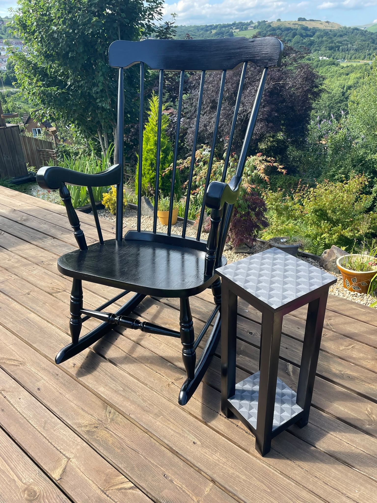

Bespoke & commissions
Bring an old piece, an awkward idea or something you've never seen for sale.
ONE-OFF BUILDS
Start with a photo, an old piece, a previous GJ's creation or simply an idea. Garry will talk through what you want before agreeing the build.
Share a photo, inspiration or the piece you already have.
Talk through the finish, details and what the job involves.
Once the job is agreed, the idea moves into the workshop.



No catalogue required
Like an idea but not the exact piece? That's the point. Send Garry what caught your eye and tell him what you'd change.
Start a conversation →